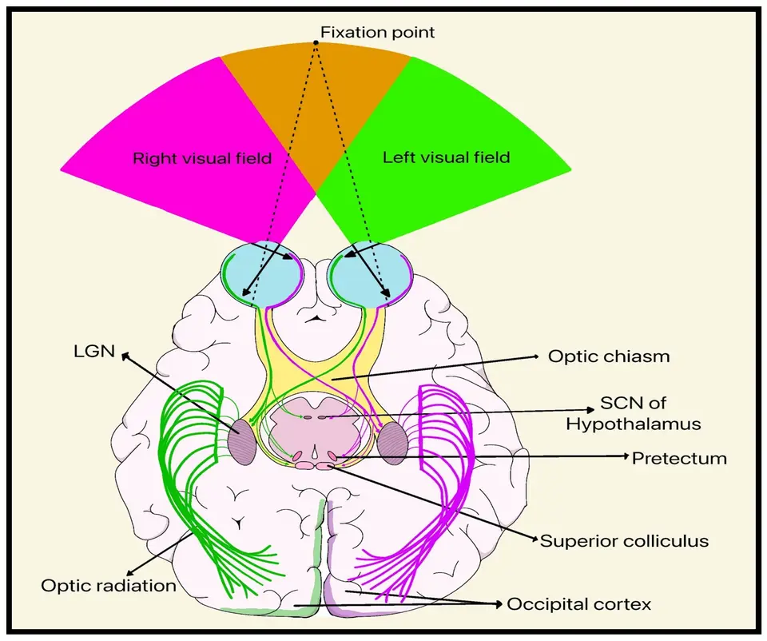

DX.8 — Névrite optique
La névrite optique frappe surtout l'adulte jeune et récupère souvent bien, mais elle peut annoncer une sclérose en plaques ou une neuromyélite optiqueS1S2. Après 50 ans, une baisse brutale relève d'abord d'une artérite à cellules géantes, qui menace l'autre œilS3. Une forme bilatérale, indolore ou très sévère impose un traitement immédiat, sans attendre les anticorpsS4.
Le tri initial d'une baisse visuelle et les gestes communs sont exposés dans le cours du symptôme, auquel cette fiche renvoie.
1. Définition
Les Hôpitaux universitaires de Genève définissent la névrite optique comme une inflammation primaire du nerf optique, dont la cause la plus fréquente est une affection démyélinisante du système nerveux centralS1. L'inflammation peut aussi venir des méninges, du contenu de l'orbite ou des sinus paranasaux, notamment ethmoïdaux postérieursS1. Le Collège des ophtalmologistes universitaires de France la décrit comme une neuropathie optique inflammatoire démyélinisante qui constitue une urgence diagnostique, car elle menace le pronostic visuelS2. Les critères internationaux de Petzold, publiés en 2022, distinguent la névrite « possible », clinique, de la névrite « certaine », confirmée par l'imagerie et les biomarqueursS7. Les deux formes topographiques se reconnaissent au fond d'œil.
Papillite et névrite rétrobulbaire
Une névrite accompagnée d'un œdème papillaire s'appelle souvent papillite, tandis qu'une névrite sans œdème papillaire s'appelle névrite rétrobulbaireS1. Chez l'adulte, deux tiers des patients gardent un fond d'œil normal, ce qui correspond à la forme rétrobulbaireS1. La forme rétrobulbaire se résume ainsi : le patient ne voit rien, et le médecin ne voit rien non plus au fond d'œilS1.
2. Épidémiologie (Suisse, puis Europe)
La revue genevoise cite une incidence de 1 à 5 cas pour 100 000 personnes et par an, mesurée aux États-UnisS1. Elle touche surtout l'adulte jeune et d'âge moyen, dont elle représente la cause principale de baisse visuelle aiguëS1. Le référentiel français indique que la plupart des cas surviennent entre 20 et 40 ans, avec environ 75 % de femmesS2. La sclérose en plaques (SEP) touche en Suisse environ 190 personnes pour 100 000 habitants, selon les données d'assurance de 2015S6. Le poids suisse de la SEP, l'histoire naturelle le lien avec la SEP et les causes non scléreuses complètent ces chiffres.
La SEP en Suisse : chiffres de l'assurance de base
Une analyse des données Helsana, qui couvrent environ 13 % de la population suisse, a identifié 1606 patients atteints de SEP en 2015S6. La prévalence extrapolée atteint 190 pour 100 000 habitants, avec un intervalle de confiance à 95 % de 180 à 190S6. L'incidence calculée pour 2015 s'élève à 16 nouveaux cas pour 100 000 habitantsS6. Les auteurs estiment que la SEP touche 10 000 à 15 000 personnes en Suisse, et que sa prévalence augmente depuis 22 ansS6. Le coût annuel à charge de l'assurance obligatoire atteint 26 710 francs par patient, presque entièrement dû aux médicamentsS6.
| Donnée | Valeur | Population et année |
|---|---|---|
| Incidence de la névrite optique | 1 à 5 pour 100 000 par an | Revue suisse, 2015S1 |
| Prévalence de la SEP | 190 pour 100 000 | Suisse, 2015S6 |
| Incidence de la SEP | 16 pour 100 000 par an | Suisse, 2015S6 |
| Part des femmes | environ 75 % | Référentiel français, 2025S2 |
Ces chiffres comptent les malades de la SEP, et non les névrites, qui précèdent souvent la maladie sans toujours y conduireS1.
Histoire naturelle d'une névrite typique
La vision récupère rapidement chez la majorité des patients et revient presque à sa valeur initiale en quatre à six semainesS1. Selon le référentiel français, la récupération complète prend trois à six mois, et la grande majorité des patients a retrouvé une acuité normaleS2. Les déficits du champ visuel régressent souvent, mais ils ne disparaissent pas complètementS1. Le risque de récidive atteint 28 % à cinq ans, puis près de 35 % à dix ans, et il augmente lorsque la SEP est confirméeS1. En l'absence de récupération, une atrophie du nerf optique peut débuter dès la quatrième semaineS1.
Névrite optique et sclérose en plaques
La névrite est la manifestation primaire d'une SEP dans 15 à 20 % des cas, selon la revue genevoiseS1. Le référentiel français la dit inaugurale dans 20 % des casS2. Selon le comité McDonald, la névrite est la première manifestation chez 25 à 35 % des patients présentant un premier épisode démyélinisantS5. Au cours de la SEP, 40 à 50 % des patients font une névrite, et les autopsies retrouvent une atteinte du nerf dans 100 % des casS1. Sur la seule clinique, le risque de développer une SEP atteint 50 % dans les quinze ans qui suivent la névriteS1S2. La majorité des patients atteints d'une névrite ne développera pourtant jamais de SEPS1.
Toutes les névrites ne relèvent pas de la SEP
Le groupe de Petzold rappelle que, dans le monde, la névrite optique relève cumulativement plus souvent d'autres maladies que de la SEPS7. La cause et la prise en charge varient selon la région, l'accès aux traitements et l'origine ethniqueS7. La revue genevoise cite les infections systémiques, la sarcoïdose et les formes para-infectieuses après une infection virale ou bactérienneS1. Elle mentionne aussi une association rapportée avec les vaccinations contre le BCG, l'hépatite, la rage, le tétanos et la rubéoleS1.
3. Physiopathologie
Le nerf optique est formé par les axones des cellules ganglionnaires de la rétine ; la base anatomique explique pourquoi la névrite reste monoculaire. Dans la forme démyélinisante, l'inflammation détruit la myéline, ce qui ralentit puis bloque la conduction du signal visuelS1S2. La chaleur modifie le pH autour du nerf et dégrade encore la transmission des potentiels d'action, ce qui explique le phénomène d'UhthoffS1. Lorsque l'inflammation persiste, les axones dégénèrent, et l'OCT (tomographie en cohérence optique) mesure leur perte deux mois plus tardS1. La chaîne en quatre temps relie chaque lésion à l'examen et au traitement.
Base à connaître : des yeux au cortex occipital
La rétine et le nerf optique sont les seuls endroits où les cellules ganglionnaires sont accessibles à l'imagerie, ce qui fonde l'intérêt de l'OCTS1. Le nerf optique transporte les fibres d'un seul œil jusqu'au chiasma, où croisent les fibres issues des hémirétines nasales. Une lésion en avant du chiasma donne donc un déficit d'un seul œil, alors qu'une lésion en arrière atteint les deux champs. Les fibres pupillaires quittent la voie visuelle vers le prétectum ; leur conduction ralentie produit le déficit pupillaire afférent relatif.
Voies visuelles, vue inférieure du cerveau. ce schéma anatomique publié est une vue inférieure qui garde ses légendes anglaises d'origine

Lisez d'abord seul ce cliché (voies visuelles, vue inférieure du cerveau) : cherchez vous-même le signe.
La copie annotée (voies visuelles, vue inférieure du cerveau) porte des numéros qui renvoient aux repères décrits ci-dessous.
- Le nerf optique relie un globe au chiasma ; une névrite le touche avant tout croisement, donc le déficit reste monoculaire.
- Au chiasma, les fibres nasales croisent ; une lésion à ce niveau atteint les deux champs temporaux.
- Le prétectum reçoit des fibres du nerf optique ; leur conduction ralentie explique le déficit pupillaire afférent relatif.
- Le corps géniculé latéral relaie la voie visuelle ; une lésion en aval donne un déficit homonyme des deux yeux.
- Le schéma montre une anatomie normale ; il ne représente aucune névrite.
- Un déficit des deux yeux oriente vers le chiasma, vers les voies postérieures ou vers une névrite bilatérale.
Ce que l'image décide. Un déficit d’un seul œil avec déficit pupillaire afférent relatif localise l’atteinte en avant du chiasma.

Amorce, développement, installation, maintien
L'amorce est immunologique : une affection démyélinisante, une maladie à anticorps anti-aquaporine 4 (AQP4) ou anti-glycoprotéine de la myéline oligodendrocytaire (MOG), ou une infectionS1S2. Le développement inflammatoire provoque un œdème du nerf, que l'IRM (imagerie par résonance magnétique) montre comme un hypersignal rehaussé après gadoliniumS2. L'installation du bloc de conduction allonge la latence des potentiels évoqués visuels et crée le déficit pupillaire afférentS1. Le maintien correspond à la perte axonale, que l'OCT mesure par l'amincissement de la couche des fibres nerveuses rétiniennesS1.
| Perturbation | Examen qui la montre | Traitement qui la corrige |
|---|---|---|
| L'inflammation œdémateuse gonfle le nerf. | L'IRM orbitaire montre un hypersignal rehausséS2. | La méthylprednisolone à forte dose accélère la récupérationS1S10. |
| La démyélinisation bloque la conduction. | Les potentiels évoqués visuels montrent une latence allongéeS1. | La remyélinisation spontanée restaure la fonction en quelques semainesS1. |
| L'attaque par anticorps anti-AQP4 détruit le nerf. | Le dosage sérique des anticorps confirme la maladieS1. | L'aphérèse précoce s'ajoute si les corticoïdes ne suffisent pasS4. |
| Les axones dégénèrent. | L'OCT montre l'amincissement des fibres rétiniennesS1. | Aucun traitement ne régénère l'axone ; la prévention des récidives protège le capital restantS1. |
Le traitement corticoïde n'agit que sur la vitesse de récupération : un an après l'épisode, le résultat visuel ne diffère pas de celui du placeboS1.
4. Démarche diagnostique
Les graves passent d'abord : l'occlusion artérielle rétinienne (DX.9, 🚩 E1) et l'artérite à cellules géantes (DX.10, 🚩 E2) donnent une baisse brutale et indolore après 50 ansS3. Le médecin vérifie ensuite que l'atteinte siège bien sur le nerf optique, grâce au déficit pupillaire afférent et à la dyschromatopsieS1. Il élimine enfin les imitateurs : compression, ischémie non artéritique, maladie systémique et neuropathie de LeberS1. Un tableau atypique impose de remettre en question le diagnostic sans attendreS1. Le raisonnement pas à pas évite les erreurs classiques du débutant.
Raisonnement pas à pas : mécanisme, signe, examen, décision
Mécanisme : une lésion du nerf optique ralentit le signal d'un seul œil, avant le chiasma, et la rétine reste intacteS1.
Signe : la pupille se dilate quand la lumière passe sur l'œil atteint, et les couleurs y paraissent délavéesS1S2.
Examen : l'IRM orbitaire montre un nerf en hypersignal rehaussé, tandis que le fond d'œil reste souvent normalS1S2.
Décision : la névrite typique justifie une IRM cérébrale pour estimer le risque de SEP, puis un avis neurologiqueS1.
| Erreur du débutant | Correction |
|---|---|
| Il rassure parce que le fond d'œil est normal. | Deux tiers des névrites gardent un fond d'œil normalS1. |
| Il conclut à une SEP dès la première névrite. | La majorité des patients ne développera pas de SEPS1. |
| Il prend une aggravation à la chaleur pour une nouvelle poussée. | Le phénomène d'Uhthoff reflète la thermolabilité des axones démyélinisésS2. |
| Il garde le diagnostic malgré une vision qui ne récupère pas. | L'absence de récupération impose de rechercher une compressionS1. |
Exemple chiffré : une femme de 28 ans voit baisser son œil droit à 0,3 en quatre jours, avec une douleur aux mouvements ; ce profil est typique d'une névriteS1S2. Si son IRM cérébrale est normale, son risque de SEP à quinze ans reste de 25 %S1.
Ce qui tranche, le piège, la conduite
| Diagnostic | Élément qui tranche | Piège | Conduite si positif |
|---|---|---|---|
| 🚩 Neuropathie ischémique artéritique | Le patient a plus de 50 ans et la CRP (protéine C réactive) est élevéeS3. | L'œdème papillaire fait croire à une papillite. | Les corticoïdes commencent avant la biopsie (DX.10)S3. |
| Neuropathie ischémique non artéritique | La baisse survient brutalement au réveil, sans douleur, avec un déficit altitudinalS3. | Une papille pâle et œdémateuse ressemble à une papillite. | Aucun traitement n'a démontré d'efficacité ; les facteurs vasculaires se contrôlentS3. |
| Compression du nerf | L'IRM montre une masse ; la vision ne récupère pasS1. | Une corticothérapie améliore parfois transitoirement une compression. | L'avis neurochirurgical ou orbitaire est demandé rapidement. |
| Neuromyélite optique | Les anticorps anti-AQP4 sont présents ; l'atteinte est sévère ou bilatéraleS1S2. | La douleur périorbitaire manque souventS1. | L'aphérèse se discute très tôtS4. |
| Neuropathie optique de Leber | Le contexte familial et l'absence d'inflammation à l'IRM oriententS1. | Le phénomène d'Uhthoff existe aussi dans cette maladieS1. | Le bilan génétique se demande en milieu spécialisé. |
Le débutant prend souvent un œdème papillaire pour une papillite, alors qu'il domine aussi la neuropathie ischémiqueS3. Exemple : un homme de 72 ans perd la vision d'un œil au réveil, sans douleur ; ce profil impose la CRP immédiate, et non une IRM de névriteS3.
5. Anamnèse ciblée et drapeaux rouges
L'anamnèse précise la vitesse d'installation, car la névrite s'aggrave en quelques heures à quelques jours, alors que l'ischémie frappe d'un coupS2S3. Le médecin caractérise ensuite la baisse visuelle, la douleur, les couleurs, les photopsies et le phénomène d'Uhthoff. Il recherche enfin les antécédents et le contexte, puis les drapeaux rouges qui changent la conduite.
Baisse visuelle : symptôme cardinal
La baisse visuelle aiguë touche plus de 90 % des patients et varie d'une acuité presque normale jusqu'à l'amauroseS1. Elle progresse sur quelques heures à quelques jours et peut descendre sous 1/10S2. Elle peut encore s'aggraver pendant les deux semaines qui suivent son début, même sous corticoïdesS1. Ce profil subaigu et unilatéral est typique ; une perte complète d'emblée est atypique et réduit la probabilité d'une SEPS1.
Douleur rétro-oculaire
Dans l'étude ONTT (Optic Neuritis Treatment Trial), 92 % des patients rapportaient une douleur située au-dessus ou derrière l'œil atteintS1. Le référentiel français retient une douleur dans 80 % des cas, augmentée par les mouvements oculairesS2. Les mouvements des yeux tirent sur la gaine du nerf, dont les fibres dépendent du nerf trijumeau, ce qui explique la douleurS1. La douleur peut précéder la baisse de quelques jours, puis elle diminue nettement après trois à cinq joursS1. Une douleur qui persiste au-delà est atypique et doit faire remettre en question le diagnosticS1. Son absence est également atypique : elle oriente vers une neuromyélite optique ou une ischémieS1S3.
Couleurs délavées et contrastes affaiblis
Tous les patients présentent une dyschromatopsie, plus fréquente encore que la baisse d'acuité, et elle reste sensible même si l'acuité baisse peuS1. Le patient décrit des couleurs délavées, surtout dans l'axe rouge-vert, que le référentiel français qualifie de classiqueS2. La sensibilité aux contrastes diminue aussi, ce qui gêne la lecture en faible lumièreS1. Ce symptôme est typique ; son absence fait douter d'une atteinte du nerf optique.
Photopsies et phénomène de Pulfrich
Un tiers des patients perçoit de petites étincelles, spontanées ou déclenchées par les mouvements oculaires ou par un bruitS1. Les patients les rapportent rarement spontanément, donc le médecin les recherche activementS1. Certains perdent la vision du relief : un pendule qui oscille latéralement semble décrire une ellipse en profondeurS1. Ce phénomène de Pulfrich naît d'une conduction inégale entre les deux nerfs optiquesS1.
Phénomène d'Uhthoff
La vision se dégrade transitoirement à l'effort, pendant une fièvre, un bain chaud ou une douche chaudeS1. Le référentiel français y voit l'expression de la thermolabilité des axones démyélinisésS2. Ce phénomène n'est pas pathognomonique, puisqu'il existe dans la neuropathie de Leber et chez certains sujets sainsS1. Associé à une névrite, il augmenterait selon certains auteurs le risque d'une SEP ultérieureS1. Une baisse transitoire liée à la chaleur ne prouve donc pas une nouvelle poussée.
Questions de contexte et leur raison
| Question | Raison |
|---|---|
| Le patient a-t-il déjà eu une névrite ou un trouble neurologique transitoire ? | Une récidive oriente vers une SEP ou une maladie à anticorpsS1S2. |
| A-t-il eu une faiblesse des jambes ou des troubles sphinctériens ? | Une paraparésie évoque une neuromyélite optiqueS1. |
| A-t-il eu de la fièvre, une infection ou un vaccin récent ? | Une forme para-infectieuse ou post-vaccinale devient possibleS1. |
| A-t-il été griffé par un chat ? | Une infection à Bartonella henselae peut causer une névriteS1. |
| Souffre-t-il de céphalées, de claudication de la mâchoire ou a-t-il plus de 50 ans ? | Une artérite doit être recherchée en urgenceS3. |
| Existe-t-il une maladie systémique connue ? | La sarcoïdose, le lupus et la granulomatose avec polyangéite peuvent toucher le nerfS1. |
Drapeaux rouges et action immédiate
| Drapeau rouge | Signification | Action immédiate |
|---|---|---|
| 🚩 Le patient a plus de 50 ans et la baisse est brutale. | Une neuropathie ischémique artéritique menace l'autre œilS3. | La CRP est dosée et les corticoïdes débutent le jour mêmeS3. |
| 🚩 L'atteinte est bilatérale ou très sévère. | Une neuromyélite optique ou une maladie associée aux anticorps anti-MOG (MOGAD) devient probableS2S9. | Les anticorps anti-AQP4 et anti-MOG sont demandés, et le traitement commence sans attendreS4. |
| 🚩 Une paraparésie ou des troubles sphinctériens apparaissent. | Une myélite accompagne la névriteS1. | L'IRM médullaire est faite en urgenceS1. |
| 🚩 La vision ne récupère pas après quatre semaines. | Une compression ou une autre cause doit être recherchéeS1. | L'IRM et l'avis spécialisé sont reprisS1. |
| 🚩 La douleur persiste au-delà de cinq jours. | Le diagnostic de névrite démyélinisante devient douteuxS1. | Le bilan différentiel est élargiS1. |
6. Examen physique ciblé, région par région
L'examen se fait dans l'ordre suivant : acuité visuelle, vision des couleurs et des contrastes, pupilles, champ visuel, fond d'œil et examen neurologique. Le déficit pupillaire afférent relatif est le signe clé, car la revue genevoise en fait un critère obligatoire, même quand l'acuité reste normaleS1. Le fond d'œil reste normal chez deux tiers des adultes, donc un fond d'œil normal ne rassure jamaisS1.
Acuité visuelle, œil par œil
Le médecin mesure l'acuité de loin avec la correction optique, en masquant l'autre œilS1. L'œil sain sert de référence normale, car la névrite reste habituellement unilatérale chez l'adulteS1. Chez une patiente de 24 ans, l'acuité était de 0,2 à l'admission, puis de 0,8 huit semaines plus tardS1. Le chiffre initial est la référence qui permet de juger une aggravation pendant les deux premières semainesS1.
Vision des couleurs et des contrastes
Les planches pseudo-isochromatiques d'Ishihara mesurent la dyschromatopsie au cabinet ; les tests Farnsworth-Munsell 100-Hue et D-15 la précisentS1. Les planches de Pelli-Robson mesurent la sensibilité aux contrastes, presque toujours diminuéeS1. Le geste le plus simple compare un objet rouge présenté à chaque œil : l'œil atteint le voit plus terne. Selon l'ONTT, la qualité de la dyschromatopsie varie et ne suit aucun schéma prédictifS1.
Déficit pupillaire afférent relatif
Le médecin éclaire alternativement chaque œil dans la pénombre, en gardant la lumière quelques instants sur chacun. Normalement, les deux pupilles se contractent de la même façon, quel que soit l'œil éclairé. Dans la névrite, la pupille se dilate lorsque la lumière passe sur l'œil atteint : c'est la pupille de Marcus GunnS2. La revue genevoise demande de remettre le diagnostic en question si ce déficit manqueS1. Le piège concerne la névrite bilatérale symétrique, où les deux nerfs conduisent aussi mal et où le déficit relatif peut disparaître.
Champ visuel
Chaque névrite comporte une atteinte du champ visuel, que la périmétrie cinétique ou statique préciseS1. Le champ montre classiquement un scotome central ou cæcocentralS2. Lors d'un premier épisode, il montre souvent un déficit diffus auquel s'ajoute un scotome centralS1. Dans l'ONTT, 74 % des patients avec névrite unilatérale avaient aussi des déficits du champ de l'œil réputé sainS1. Un déficit altitudinal oriente plutôt vers une neuropathie ischémiqueS3.
Fond d'œil
Le fond d'œil reste normal chez deux tiers des patients, tandis qu'un tiers présente une papille proéminente, mal délimitée et œdémateuseS1. Les vaisseaux peuvent devenir moins visibles sur l'œdème, avec parfois une hémorragie papillaire ou péripapillaireS1. Une étoile maculaire, faite de dépôts lipidiques, oriente vers une cause infectieuse plutôt que démyélinisanteS1. La revue genevoise l'illustre chez une fillette de 11 ans griffée par un chat et infectée par Bartonella henselaeS1. Une papille pâle quatre semaines plus tard signe l'atrophie d'une névrite qui n'a pas récupéréS1.
Examen neurologique ciblé
Le médecin cherche une atteinte d'un autre territoire, car deux régions touchées orientent vers une maladie démyélinisante disséminéeS5. Il teste la force et les réflexes des membres inférieurs, puisqu'une paraparésie suggère une myélite de neuromyélite optiqueS1. Il examine l'oculomotricité, la sensibilité et la coordination, et il note tout déficit pour le transmettre au neurologue.
7. Approche syndromique
Le syndrome 7.1, neuropathie optique unilatérale typique, réunit baisse subaiguë, douleur aux mouvements, dyschromatopsie et déficit pupillaire afférentS1S2. Le syndrome 7.2, névrite atypique, regroupe la forme bilatérale, indolore, très sévère ou œdémateuse, qui oriente vers une maladie à anticorps ou une autre causeS1S9. Le syndrome 7.3, névrite de l'enfant, se distingue par sa bilatéralité et son œdème papillaire fréquentS1.
7.1 — Névrite typique
| Signes fonctionnels | Signes physiques |
|---|---|
| La vision baisse en quelques jours d'un seul côtéS2. | Le déficit pupillaire afférent apparaît du côté atteintS1. |
| Les mouvements oculaires réveillent la douleurS1. | Le champ visuel montre un scotome centralS2. |
| Les couleurs paraissent délavéesS1. | Le fond d'œil reste normal dans la forme rétrobulbaireS1. |
Le mécanisme commun est un bloc de conduction démyélinisant du nerf optique, qui épargne la rétineS1.
7.2 — Névrite atypique
La revue genevoise retient comme atypiques la perte complète de la vision, l'absence de douleur, un œdème papillaire très marqué et les hémorragies papillairesS1. Ces signes diminuent le risque de SEP, mais ils augmentent la probabilité d'une cause non démyélinisanteS1. La névrite de la neuromyélite optique est plus sévère, souvent bilatérale et parfois « à bascule » d'un œil à l'autreS2. La névrite associée aux anticorps anti-MOG associe souvent bilatéralité, œdème papillaire et hypersignal étendu du nerfS9.
7.3 — Névrite de l'enfant
Chez l'enfant, la névrite touche typiquement les deux yeux et s'accompagne d'un œdème papillaire dans deux tiers des casS1. Les enfants rapportent souvent des céphalées, et un épisode fébrile précède fréquemment les troubles visuelsS1. Le pronostic visuel est meilleur que chez l'adulte et le risque de SEP plus faible, sauf dans l'atteinte unilatéraleS1.
8. Diagnostic positif et critères
Le diagnostic de névrite optique reste clinique : ni la ponction lombaire ni l'imagerie ne sont nécessaires pour l'établirS1. Les critères de Petzold de 2022 classent la névrite « possible » sur la clinique, puis « certaine » grâce à l'imagerie cérébrale, orbitaire et rétinienne et aux anticorpsS7. Les critères de McDonald révisés en 2024 comptent désormais le nerf optique comme cinquième localisation de la SEPS5. Les critères des maladies à anticorps exigent un phénotype compatible et une méthode de dosage fiableS8S9.
McDonald 2024 : le nerf optique devient une localisation
La dissémination spatiale est acquise lorsque deux des cinq localisations portent des lésions typiques, symptomatiques ou nonS5. Ces localisations sont le nerf optique, les régions juxtacorticale ou corticale, périventriculaire et infratentorielle, ainsi que la moelleS5. Le nerf optique compte seulement si aucune meilleure explication n'existe, par exemple une atteinte chiasmatique, une périnévrite ou une lésion longitudinale étendueS5. Dans une cohorte de 160 patients suivis quinze ans, l'ajout du nerf optique a augmenté la sensibilité et l'exactitude des critères de dissémination spatialeS5. L'IRM, les potentiels évoqués et l'OCT montrent l'atteinte du nerf avec une sensibilité comparable, selon une cohorte de 157 patientsS5. La dissémination temporelle n'est plus exigée dans certaines situations précises, ce qui permet un diagnostic plus précoceS5.
| Preuve d'atteinte du nerf | Seuil retenu |
|---|---|
| IRM | Une lésion intrinsèque du nerf, sans meilleure explication, suffitS5. |
| Potentiels évoqués visuels | Une latence P100 anormale ou une asymétrie significative entre les yeux suffitS5. |
| OCT | Une différence entre les yeux d'au moins 6 µm pour les fibres péripapillaires, ou 4 µm pour la couche ganglionnaire, suffitS5. |
L'index des chaînes légères libres kappa du liquide céphalorachidien peut remplacer les bandes oligoclonales, avec une concordance d'environ 87 %S5. Après 50 ans ou en présence de comorbidités vasculaires, des précautions supplémentaires sont requises avant de conclure à une SEPS5.
Neuromyélite optique et MOGAD
Les anticorps anti-aquaporine 4 ont une sensibilité de 75 % et une spécificité supérieure à 90 % pour la neuromyélite optiqueS1. Une lésion médullaire étendue sur trois segments vertébraux à l'IRM au gadolinium fait partie de ses critèresS1. Le panel international de 2023 décrit la MOGAD par une névrite, une myélite ou une encéphalomyélite aiguë disséminée, d'évolution monophasique ou récidivanteS8. Il insiste sur le dosage des anticorps anti-MOG par test cellulaire, condition de l'exactitude diagnostiqueS8. Un test positif chez un patient au phénotype compatible est très spécifique de la MOGADS9. Le panel précise que tous les patients atteints de SEP ne doivent pas être dépistés pour les anticorps anti-MOGS8.
9. Examens complémentaires
Le standard diagnostique (9.a) reste clinique ; l'IRM, la ponction lombaire et les potentiels évoqués servent à évaluer le risque de SEP et les causesS1. En première intention (9.b), le médecin prescrit une IRM cérébrale et orbitaire, un champ visuel, une OCT et la CRP après 50 ansS1S2S3. En seconde intention (9.d), il ajoute les anticorps anti-AQP4 et anti-MOG, la ponction lombaire et les potentiels évoqués visuelsS2S5. Les alternatives (9.c) s'appliquent à la grossesse, à l'enfant et à l'IRM impossibleS5.
IRM cérébrale et orbitaire avec gadolinium
Indication et prescription : La revue genevoise désigne l'IRM comme l'examen le plus important pour évaluer le risque de SEP après une névriteS1. La demande précise des coupes orbitaires en suppression de graisse, en séquence STIR (inversion-récupération à temps court) et en T1 après gadoliniumS5.
Interprétation : Le nerf atteint montre un hypersignal qui se rehausse après gadolinium, ce qui traduit le caractère récent de la lésionS2. Une IRM cérébrale normale ramène le risque de SEP à 25 % à quinze ans, contre 72 % lorsque l'IRM montre des lésions suspectesS1. Le nombre de lésions influence peu ce risqueS1.
Pièges : Un hypersignal longitudinal étendu avec périnévrite oriente vers une MOGAD et non vers une SEPS9. Une IRM normale ou peu spécifique ne permet pas d'écarter une neuromyélite optiqueS1.
Périmétrie statique ou cinétique
Indication : La périmétrie documente le déficit initial et sert de référence pour le suiviS1.
Interprétation : Un scotome central ou cæcocentral est typique, mais la névrite peut produire des déficits de toutes formesS1S2.
Piège : L'examen de l'œil réputé sain montre souvent des déficits infracliniques, ce qui ne signe pas une névrite bilatérale cliniqueS1.
Tomographie en cohérence optique
Principe : L'OCT utilise l'interférométrie en lumière proche de l'infrarouge et atteint une résolution de l'ordre du micromètreS1.
Interprétation aiguë : Au stade d'œdème papillaire, elle peut montrer un épaississement des fibres ganglionnaires péripapillairesS2.
Interprétation tardive : Deux mois après la névrite, l'épaisseur de la couche des fibres nerveuses rétiniennes diminueS1.
L'OCT est peu coûteuse, non invasive, reproductible et plus rapide que l'IRM ; elle corrèle bien avec l'acuité et la sensibilité aux contrastesS1. Elle aide le diagnostic différentiel, car la perte ganglionnaire est plus importante dans la neuromyélite optique que dans la SEPS1.
Pièges : L'OCT est moins sensible que les potentiels évoqués pour le diagnostic de névriteS1. Elle ne prédit pas le risque de SEP et ne corrèle ni avec l'atrophie corticale ni avec le score de handicapS1. La couche des fibres s'amincit aussi chez des patients atteints de SEP qui n'ont jamais eu de névriteS1.
CRP chez le patient de plus de 50 ans
Un syndrome inflammatoire, attesté par une CRP élevée, est quasi constant dans l'artérite à cellules géantesS3. Le référentiel français précise que la vitesse de sédimentation est aujourd'hui délaisséeS3. Une CRP élevée chez un patient de plus de 50 ans impose la conduite de DX.10, avant toute hypothèse de névriteS3.
Anticorps anti-AQP4 et anti-MOG sériques
Indication : le médecin les prescrit devant une névrite sévère, bilatérale, récidivante ou œdémateuse, et devant une myélite associéeS2S9.
Prescription : Le laboratoire doit employer un test cellulaire, idéalement sur cellules vivantes pour les anticorps anti-MOGS8S9.
Interprétation : Un résultat positif chez un patient au phénotype compatible confirme une neuromyélite optique ou une MOGAD et change le traitement de fondS1S9.
Piège : Un faible titre sans phénotype compatible se discute avec le laboratoire et le neurologue, car le panel international conditionne le diagnostic à la cliniqueS8.
Ponction lombaire
La ponction lombaire n'est pas systématique, mais elle est fréquemment réaliséeS2. Elle évalue le risque ultérieur de SEP par les bandes oligoclonales ou l'index kappaS1S5. L'index kappa peut fournir un résultat en 24 heures et ne dépend pas de l'interprétation d'un lecteurS5. Une cellularité ou une protéinorachie inhabituelles orientent vers une cause infectieuse ou inflammatoire systémique.
Potentiels évoqués visuels
Les potentiels évoqués visuels montrent un allongement de latence ; ils peuvent confirmer la névrite, mais ils ne font pas partie des critères diagnostiquesS1. Le référentiel français précise qu'ils ne sont pas systématiquesS2. Pour la SEP, une latence P100 anormale ou une asymétrie entre les yeux suffit à prouver l'atteinte du nerf, en l'absence d'autre explicationS5. Ils restent utiles lorsque l'IRM est impossible ou que l'OCT manque de sensibilitéS1.
Alternatives selon la situation
| Situation | Alternative |
|---|---|
| IRM impossible | Les potentiels évoqués et l'OCT apportent la preuve de l'atteinte du nerfS5. |
| Grossesse | L'IRM sans gadolinium, l'OCT et les potentiels évoqués évitent le produit de contraste. |
| Enfant | L'atteinte bilatérale et œdémateuse justifie les anticorps anti-MOG dès le premier épisodeS1S9. |
| Fonction rénale très altérée | Le gadolinium se discute avec le radiologue ; l'OCT et les potentiels évoqués restent disponibles. |
10. Arbre décisionnel
L'arbre décisionnel commence par l'âge et la vitesse de la baisse, puis il vérifie le signe pupillaire, avant de classer la névrite en typique ou atypiqueS1S3.
Si… alors…
- Si le patient a plus de 50 ans et que la baisse est brutale, alors la CRP est dosée et la conduite de DX.10 s'appliqueS3.
- Si la baisse est brutale, au réveil et indolore, avec un déficit altitudinal, alors une neuropathie ischémique devient probableS3.
- Si une atteinte unilatérale ne s'accompagne d'aucun déficit pupillaire afférent, alors la névrite devient douteuseS1.
- Si les couleurs sont normales et qu'une métamorphopsie existe, alors la rétine est examinée en premier.
- Si la névrite est typique, alors l'IRM cérébrale et orbitaire estime le risque de SEPS1.
- Si la névrite est atypique, alors le médecin dose les anticorps et commence aussitôt la corticothérapieS2S4.
- Si la récupération reste insuffisante après les corticoïdes, alors l'aphérèse commence dans les premiers joursS4.
- Si la vision ne récupère pas après quatre semaines, alors une compression ou une autre cause est recherchéeS1.
11. Prise en charge selon les recommandations suisses
11.A — But. Le traitement vise à accélérer la récupération visuelle, à protéger l'autre œil dans les maladies à anticorps et à prévenir les récidivesS1S4. Dans l'ONTT, la méthylprednisolone intraveineuse accélérait la récupération, mais le résultat visuel à un an restait identique dans les trois groupesS1.
11.B — Moyens. La conduite d'urgence chronologique fixe les délais de chaque geste. Le référentiel français propose une corticothérapie urgente à forte dose dès le diagnostic confirméS2. La méthylprednisolone (Solu-MEDROL®) figure dans l'AIPS suisse pour la névrite rétrobulbaireS10. L'aphérèse complète les corticoïdes dans la neuromyélite optique, et le traitement de fond dépend de la cause. Les situations spéciales modifient le choix et la surveillance.
11.C — Surveillance. Le médecin contrôle l'acuité, les couleurs et le champ visuel, car la baisse peut encore s'aggraver pendant deux semainesS1. Pendant les bolus, l'AIPS impose une surveillance clinique étroite de la pression artérielle, de la glycémie et des électrolytesS10.
Les résultats de l'essai de référence ONTT fondent ces choix.
11.D — Pronostic et sortie. Le pronostic fonctionnel d'une névrite typique est favorable, et la majorité des patients retrouve une acuité normaleS1S2. Le patient rentre à domicile quand il remplit les critères de sortie.
L'essai ONTT, socle des décisions
Cet essai randomisé multicentrique de phase 3 a inclus 457 patients depuis 1988 et les a suivis pendant quinze ansS1. Il recrutait des patients de 18 à 45 ans, vus dans les huit jours, sans névrite ni corticothérapie antérieuresS1. L'âge moyen était de 32 ans, avec 77 % de femmes et 85 % de patients d'origine caucasienneS1.
| Bras | Traitement | Effectif |
|---|---|---|
| Oral | La prednisone orale est donnée seule pendant 14 jours. | 156 |
| Intraveineux | La méthylprednisolone intraveineuse est donnée 3 jours, puis la prednisone orale 11 jours. | 151 |
| Placebo | Un placebo oral est donné. | 150 |
Deux ans après une névrite avec IRM suspecte, le risque de SEP était de 16 % dans le bras intraveineux, contre 30 % dans les deux autres brasS1. Cet effet protecteur s'effaçait ensuite, puisque la corticothérapie ne modifie pas la probabilité à long terme de développer une SEPS1. Avec une IRM normale, les femmes avaient un risque de SEP trois fois plus élevé, et la forme rétrobulbaire un risque doubléS1.
Urgence — conduite chronologique
| Délai | Geste | Raison |
|---|---|---|
| Première heure | Le médecin mesure l'acuité, les couleurs, les pupilles et le champ, puis dose la CRP après 50 ansS1S3. | Une artérite menace l'autre œil et ne tolère aucun retardS3. |
| Premier jour | Il demande l'IRM cérébrale et orbitaire et adresse le patient au neuro-ophtalmologueS1S2. | L'IRM écarte une compression et estime le risque de SEPS1. |
| Premier jour si forme sévère ou atypique | La méthylprednisolone intraveineuse commence, après prélèvement des anticorpsS4. | Dans la neuromyélite optique, le traitement d'attaque doit débuter le plus tôt possibleS4. |
| Jours 2 à 5 | Le médecin réévalue chaque jour la vision sous corticoïdesS4. | Une réponse insuffisante impose l'aphérèse sans délaiS4. |
| Jour 7 au plus tard | L'aphérèse doit avoir débuté si elle est indiquéeS4. | Débutée après sept jours, elle n'obtient une rémission complète que chez 3,7 % des patientsS4. |
| Semaines 2 à 6 | Le médecin contrôle la récupération et transmet les résultats au neurologueS1. | La vision récupère habituellement en quatre à six semainesS1. |
La complication à prévoir est l'atteinte de l'autre œil ou d'une moelle, qui impose une réévaluation immédiateS2S4. Le piège qui fait perdre du temps consiste à attendre les anticorps avant de traiter une forme sévèreS4.
Méthylprednisolone — Solu-MEDROL® (poudre et solvant 500 mg et 1 g, n° 35112)S10
| Indication | L'AIPS cite la névrite rétrobulbaire parmi les maladies ophtalmiques et les poussées aiguës de sclérose en plaques parmi les maladies neurologiquesS10. |
|---|---|
| Classe | Glucocorticoïde de synthèse administré par voie intraveineuse ; l'effet pharmacologique maximal survient une à deux heures après la perfusionS10. |
| Dose AIPS | Pour une poussée de SEP, l'AIPS indique 500 à 1000 mg par jour, perfusés en 30 minutes, pendant 3 à 5 joursS10. |
| Administration | Une dose supérieure à 250 mg se perfuse en 30 minutes au moins, de préférence le matin, dans du glucose 5 % ou du NaCl 0,9 %S10. |
| Contre-indications | Les mycoses systémiques, la voie intrathécale ou péridurale, l'hypersensibilité et la prématurité la contre-indiquent ; les vaccins vivants sont contre-indiqués sous doses immunosuppressivesS10. |
| Grossesse | La molécule franchit bien le placenta ; elle ne s'utilise qu'après une évaluation rigoureuse du rapport entre bénéfices et risquesS10. |
| Allaitement | La méthylprednisolone passe dans le lait ; l'AIPS demande de ne pas allaiter pendant le traitementS10. |
| Effets à annoncer | Les bolus exposent à l'insomnie, à l'hyperglycémie, à l'hypertension et, rarement, à une hépatite aiguë retardéeS10. |
L'AIPS précise que les corticoïdes raccourcissent les poussées sans modifier le taux de rechute ni la progression du handicapS10. Une injection de plus de 0,5 g en moins de 10 minutes a provoqué des arythmies, un collapsus et des arrêts cardiaquesS10. Des hépatites aiguës, parfois mortelles, sont survenues avec des doses d'au moins 1 g par jour, surtout chez des patientes atteintes de SEPS10. L'AIPS recommande une protection gastrique et une prophylaxie de la thrombose pendant le traitement des pousséesS10. Chez l'enfant, l'AIPS juge des doses plus faibles généralement suffisantes, sans descendre sous 0,5 mg/kg par 24 heuresS10.
Après une perfusion de 1 g en 30 minutes, la concentration plasmatique maximale atteint 16 à 72 µmol/l, puis elle chute nettement en 24 heuresS10. Des bradycardies ont été observées pendant ou après de fortes doses intraveineuses, quelle que soit la vitesse de perfusionS10. À fortes doses, des myopathies aiguës peuvent survenir, surtout en cas de myasthénie ou de curarisation associéeS10. La solution diluée reste stable 3 heures entre 20 et 25 °C, ou 24 heures entre 2 et 8 °CS10.
Le référentiel français illustre le schéma par une patiente hospitalisée qui reçoit 1 g de méthylprednisolone par jour pendant 3 jours, conforme à l'AIPSS2S10. Le relais oral dégressif, commencé à 1 mg/kg par jour puis réduit en deux à trois semaines, relève de la recommandation NEMOS, hors AIPSS4.
Échanges plasmatiques et immunoadsorption
Le groupe NEMOS recommande de commencer tôt l'aphérèse chez les patients qui récupèrent insuffisamment après de fortes doses de glucocorticoïdesS4. Les échanges plasmatiques et l'immunoadsorption sont acceptés tous les deux comme techniques d'aphérèseS4. La plupart des études réalisent en moyenne cinq cycles, quotidiens ou un jour sur deux, et jusqu'à dix cycles restent possiblesS4. Débutée dans les deux jours suivant les symptômes, l'aphérèse a obtenu jusqu'à 40 % de rémissions complètesS4. La revue genevoise décrit l'aphérèse comme un traitement de choix de la névrite résistante aux corticoïdesS1. L'efficacité des immunoglobulines intraveineuses reste débattue dans cette indicationS1.
Traitement de fond selon la cause
Le neurologue débute un traitement immunomodulateur si l'IRM est positive et que le risque de SEP lui paraît élevéS1. Ces traitements réduisent le risque de conversion vers une SEP, sans différence démontrée sur le handicap physique par rapport au placeboS1. Dans la neuromyélite optique, la revue genevoise mentionne les corticoïdes et l'azathioprine comme traitement de fondS1. Pour prévenir une nouvelle attaque, le groupe NEMOS conseille un relais oral de glucocorticoïdes pendant trois à six moisS4. Dans la MOGAD, les rechutes surviennent souvent lors d'une décroissance précoce ou rapide des corticoïdesS9.
Situations spéciales
| Situation | Conduite |
|---|---|
| Grossesse | Le risque de faible poids de naissance dépend de la dose, et le nouveau-né exposé à de fortes doses est surveillé pour une insuffisance surrénalienneS10. |
| Allaitement | L'allaitement s'interrompt pendant le traitement par méthylprednisoloneS10. |
| Enfant | Le prématuré et le nouveau-né ne reçoivent pas Solu-MEDROL®, qui contient de l'alcool benzyliqueS10. |
| Diabète | La glycémie se contrôle pendant les bolus, car les corticoïdes l'élèventS10. |
| Sujet âgé | L'artérite à cellules géantes doit être exclue avant de retenir une névriteS3. |
| Varicelle non immunisée | Une varicelle sous corticoïdes peut devenir grave et justifie un traitement antiviral immédiatS10. |
Le traitement de fond de la SEP coûte en moyenne 26 960 francs par an en médicaments à l'assurance obligatoire, ce qui justifie une indication posée par un neurologueS6.
Pronostic, guérison et sortie
- La vision est stable ou s'améliore depuis le début du traitementS1.
- Aucun signe neurologique nouveau n'est apparu pendant l'hospitalisationS1.
- La glycémie et la pression artérielle sont contrôlées après les bolusS10.
- L'IRM est réalisée et les anticorps sont prélevés, avec un rendez-vous pour leurs résultatsS1S8.
- Le patient connaît les signes d'alerte : baisse de l'autre œil, faiblesse des jambes, troubles urinairesS1.
La guérison se juge sur l'acuité, le champ et les couleurs à trois à six mois, car la récupération peut rester incomplèteS1S2. Après une névrite avec IRM normale, une SEP se manifeste dans les dix ans, puis le risque devient pratiquement nulS1.
12. Prévention
La prévention porte sur les niveaux secondaire et tertiaire, car la cause immunologique de la névrite échappe à toute prévention primaire connue. La prévention secondaire repose sur l'IRM initiale, qui identifie les patients à haut risque de SEP et oriente vers un traitement de fond précoceS1. La prévention tertiaire protège le nerf contre les récidives, dont le risque atteint 28 % à cinq ansS1. Le piège des récidives concerne le choix et la durée des corticoïdes.
Ce qui favorise les récidives
Dans l'ONTT, la prednisone orale seule, sans bolus intraveineux, s'accompagnait d'environ 30 % de récidives, contre 15 % dans chacun des deux autres brasS1. Dans la MOGAD, une décroissance trop rapide des corticoïdes favorise la rechuteS9. Le médecin informe le patient que la chaleur peut réveiller transitoirement un déficit ancien, sans signifier une pousséeS1. Il lui demande de consulter le jour même devant une baisse de l'autre œilS2.
13. Points clés
Le diagnostic de névrite optique est clinique : baisse subaiguë, douleur aux mouvements, dyschromatopsie et déficit pupillaire afférent suffisent à le poserS1.
Après 50 ans, une baisse brutale impose d'abord la CRP et l'exclusion d'une artérite à cellules géantesS3.
L'IRM cérébrale ne pose pas le diagnostic, mais elle estime le risque de SEP : 25 % à quinze ans si elle est normale, 72 % si elle est anormaleS1.
La méthylprednisolone accélère la récupération, mais elle ne change pas le résultat visuel à un anS1.
Une névrite bilatérale, indolore ou très sévère impose les anticorps anti-AQP4 et anti-MOG, et l'aphérèse précoce si les corticoïdes échouentS4S9.
14. Pièges et questions fréquentes à l'examen fédéral suisse
Les questions de révision reprennent les confusions de critères, de gravité, de doses et de conduite relevées dans les treize points précédents.
Question, réponse, raison
| Question | Réponse | Raison et renvoi |
|---|---|---|
| Un fond d'œil normal exclut-il une névrite ? | Non. | Deux tiers des patients ont un fond d'œil normal (point 6)S1. |
| Que faire si le déficit pupillaire afférent manque dans une névrite unilatérale ? | Le diagnostic est remis en question. | Ce signe est un critère obligatoire (point 6)S1. |
| Faut-il une IRM pour poser le diagnostic ? | Non, le diagnostic est clinique. | L'IRM estime le risque de SEP (point 8)S1. |
| Quel est le risque de SEP à quinze ans si l'IRM est normale ? | Il atteint 25 %. | Il monte à 72 % si l'IRM est anormale (point 9)S1. |
| La méthylprednisolone améliore-t-elle l'acuité finale ? | Non. | Elle accélère seulement la récupération (point 11)S1. |
| Quelle dose de méthylprednisolone l'AIPS indique-t-elle pour une poussée de SEP ? | Elle indique 500 à 1000 mg par jour pendant 3 à 5 joursS10. | La perfusion dure 30 minutes (point 11)S10. |
| Pourquoi éviter la prednisone orale seule ? | Elle doublait les récidives dans l'ONTT. | Environ 30 % contre 15 % (point 12)S1. |
| Une névrite sans douleur chez un homme de 72 ans évoque-t-elle une SEP ? | Non, elle évoque d'abord une ischémie. | La CRP précède tout (point 4)S3. |
| Quand l'aphérèse doit-elle commencer dans une névrite à anticorps anti-AQP4 ? | Elle commence tôt, dès une réponse insuffisante aux corticoïdes. | Après sept jours, la rémission complète devient rare (point 11)S4. |
| Le nerf optique compte-t-il dans les critères de McDonald 2024 ? | Oui. | Il devient la cinquième localisation (point 8)S5. |
Sources
- [S1] Steffen H, Tabibian D (Hôpitaux universitaires de Genève, HUG). Névrite du nerf optique : diagnostic, traitement et implications cliniques. Revue Médicale Suisse 2015;11:2388-94. Texte intégral lu le 11.11.2026. https://revmed.ch/view/541651/4363125/RMS_499_2388.pdf
- [S2] Collège des ophtalmologistes universitaires de France (COUF). Ophtalmologie, référentiel 2025, chapitre 19 : Œil et sclérose en plaques. Consulté le 11.11.2026. https://couf.fr/xhtml/Ch019_337-346_B9782294786624500289.xhtml
- [S3] Collège des ophtalmologistes universitaires de France (COUF). Ophtalmologie, référentiel 2025, chapitre 16 : Occlusions artérielles rétiniennes et neuropathie optique ischémique antérieure. Consulté le 11.11.2026. https://couf.fr/xhtml/Ch016_283-302_B9782294786624500253.xhtml
- [S4] Kümpfel T, Giglhuber K, Aktas O, et al. Update on the diagnosis and treatment of neuromyelitis optica spectrum disorders (NMOSD), revised recommendations of the Neuromyelitis Optica Study Group (NEMOS). Part II: attack therapy and long-term management. J Neurol 2024;271:141-176. DOI 10.1007/s00415-023-11910-z. Consulté le 11.11.2026. https://pmc.ncbi.nlm.nih.gov/articles/PMC10770020/
- [S5] European Committee for Treatment and Research in Multiple Sclerosis (ECTRIMS). 2024 McDonald criteria, slide deck, version du 06.10.2025 (Montalban X et al., Lancet Neurol 2025). Consulté le 11.11.2026. https://ectrims.eu/app/uploads/2025/10/2024-McDonald-Criteria_Slide-Deck_06102025.pdf
- [S6] Blozik E, Rapold R, Eichler K, Reich O (Helsana, Zurich). Epidemiology and costs of multiple sclerosis in Switzerland: an analysis of health-care claims data, 2011-2015. Neuropsychiatr Dis Treat 2017;13:2737-45. DOI 10.2147/NDT.S143180. Résumé consulté le 11.11.2026. https://pubmed.ncbi.nlm.nih.gov/29138568/
- [S7] Petzold A, Fraser CL, Abegg M (Université de Berne), et al. Diagnosis and classification of optic neuritis. Lancet Neurol 2022;21:1120-34. DOI 10.1016/S1474-4422(22)00200-9. Résumé consulté le 11.11.2026. https://pubmed.ncbi.nlm.nih.gov/36179757/
- [S8] Banwell B, Bennett JL, Marignier R, et al. Diagnosis of myelin oligodendrocyte glycoprotein antibody-associated disease: International MOGAD Panel proposed criteria. Lancet Neurol 2023;22:268-82. DOI 10.1016/S1474-4422(22)00431-8. Résumé consulté le 11.11.2026. https://pubmed.ncbi.nlm.nih.gov/36706773/
- [S9] Jeyakumar N, Lerch M, Dale RC, Ramanathan S. MOG antibody-associated optic neuritis. Eye 2024;38:2289-301. DOI 10.1038/s41433-024-03108-y. Résumé consulté le 11.11.2026. https://pubmed.ncbi.nlm.nih.gov/38783085/
- [S10] Swissmedic, information professionnelle (AIPS) Solu-MEDROL® (méthylprednisolone), poudre et solvant 500 mg et 1 g, n° 35112, Pfizer AG, mise à jour août 2025. Texte lu le 11.11.2026. https://files.refdata.ch/simis-public-prod/MedicinalDocuments/24c65936933542e2807ebdd8b2524e62-fr.html